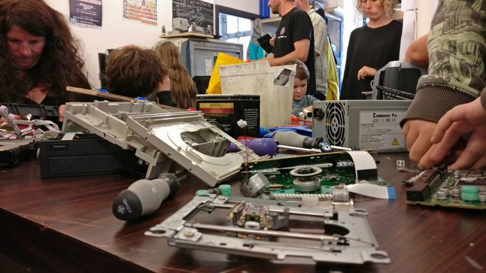

Webgame Making Mozilla Clubs
People like playing Video Games.
So, how can we use video game making to help learn text based coding?
- Current Landscape
- Why Webgame Making
- Our Pilot Projects
- Learning Principles
- Participation & Community
Past Successes in teaching Coding
Scratch, Thimble, Sonic Pi & Raspberry Pi


Where are the Gaps?
These are fantastic projects but while Scratch can leverage the attractive power of video games, it is not a real coding environment.
So what about Web Games
About Javascript Games
While Flash used to rule the roost of browser based games, HTML and Javascript games are now mature with many frameworks to support.
One framework of special interest is Phaser which as a low threshold for novice coders, good existing tutorials and a very active support forum.
Sample Platform Tutorial

Sample Flappy Bird Tutorial

Current Pilot Projects
Rolls Cresent Primary, Manchester

Home Ed Families, Manchester

Scavengers, Hebden Bridge

Deeper Webmaking Learning Principles
Game Making Mozilla Clubs build on the wider concepts of Webmaking, Physical Making and Software Tinkering
Learning in Webgame Clubs is:
- Based on real life civic problems
- Creates a wide variety of game assets using FLOSS tools
- Builds games using core web technologies
Based on real life civic problems
Because social concerns should drive tech not the other way around
Creates a wide variety of game assets using FLOSS tools
As this supports a multiple paths approach of an open an accessible tinkering, making ecology
Uses core web technologies rather than a sandbox
JS will run in any modern browser, so there is no restriction to how skills learned can be used in other web coding situations
Participation & Community
Mozilla Clubs provide a good test bed for trialling these activities. But you can help us in the making stage.
Participation is not limited to tech people.
Needed Right Now
Educators to review and road test resources and processes, how can foreground certain learning principles while maintaining interest driven process.
Game makers and coders to write sample mini games for remixing, and evolve a shared coding convention for beginner focused games
Networkers to help spread the word, create gifs, identify key messages to tweet and network.
Mick Fuzz Chesterman - @mickfuzz